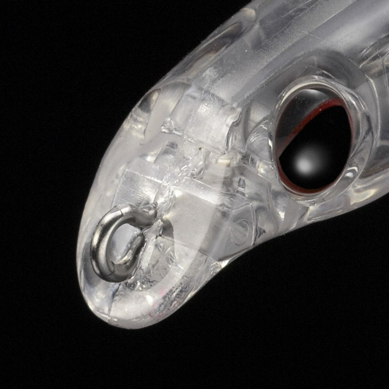
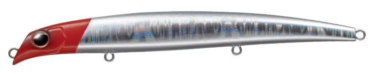
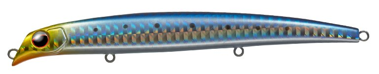
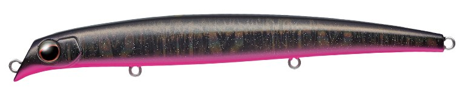
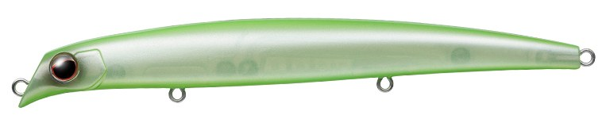

アベンジャー125F
アベンジャー125Fは、エバーグリーンのソルトブランド「オーシャンフリート」のリップレスミノーです。キャッチコピーは「引きつける「静」のアクションから、瞬間、食わせの「動」のアクションへ。」
傾斜したヘッドで流れをつかみ、スリムなボディが流れにからむことで、流れの変化に反応して自動でイレギュラーなアクションを起こす「ストリーム・リアクション」が最大の特徴です。0.1〜0.4mのシャローを、スローに丁寧に引けます。

画像出典:エバーグリーン公式HP
スペック
- メーカー
- エバーグリーン（EVERGREEN）
- タイプ
- フローティング（リップレスミノー）
- 全長
- 125mm
- 重さ
- 14.5g
- 潜行レンジ
- 0.1〜0.4m
- フック
- #8×3
- リング
- #3×3
- カラー
- 全26色（2025年に新色3色）
- ターゲット
- シーバス
- 価格
- 1,800円（税別）
▼今すぐチェック

アベンジャー125Fの特徴
流れをつかむ、センシティブ・リップレスミノー
-
傾斜ヘッドの「ストリーム・リアクション」
流れの変化を敏感にとらえて、イレギュラーなアクションを自動で引き起こす。ただ巻きでも、流れのヨレで食わせの間ができる。
-
重心移動システムで遠投できる
重心移動システムを搭載していて、誰でも簡単にロングキャストできる。
-
全ウエイトにタングステン
ウエイトはすべてタングステン。スリムなボディでも飛距離と泳ぎの安定を両立している。
アベンジャー125Fの使い方
使い方のポイントは、スローで丁寧なただ巻きです。ロッドを立て気味にして、水面直下〜0.4mを流れに合わせてゆっくり引きます。
流れの変化を手元に伝える感度も高いので、巻きが軽くなったり重くなったりする所が、流れのヨレ＝シーバスがつきやすいポイントです。流れの中では、ドリフト気味に流して漂わせるのも効果的です。

画像出典:エバーグリーン公式HP
アベンジャー125Fの得意な状況
河川や河口など、流れのあるシャローでシーバスを狙う時に出番です。
水温が下がってシーバスの反応が渋い冬〜春の低活性の時期にも強く、ゆっくり巻いても泳ぎが破綻しにくいので、居食いするようなシーバスにも口を使わせやすいルアーです。
ワンポイント
流れの中では、巻き抵抗が抜けた瞬間（流れのヨレに入った所）で一瞬巻きを止めると、ストリーム・リアクションのふらつきが出てバイトが集中しやすくなります。
アベンジャーシリーズの使い分け
| モデル | 全長／ |
こんな |
|---|---|---|
| アベンジャー125F | 125mm／ |
シリーズの |
| アベンジャー90S | 90mm／ |
ベイトが |
全長・重さはエバーグリーン公式HPの記載より。
人気カラー
アベンジャー125Fの人気カラーを紹介します。

レッドヘッドホロ定番のレッドヘッド。夜でもシルエットがはっきり出る。

マイワシイワシを再現したナチュラルカラー。澄み潮に。

スターダストブラック夜の河川で強いブラック系。シルエットで見せたい時に。

ライムサンドパール2025年に加わった新色。透けるパールで、濁りすぎない状況に。
画像出典:エバーグリーン公式HP
▼今すぐチェック
アベンジャー125Fに似ているルアー
-
 アイザー125F
ブルーブルー
詳細はこちら＞
アイザー125F
ブルーブルー
詳細はこちら＞
同じ125mmのシャローランナー。喰わせ系の泳ぎで比べたい時に。
-
 モニカ125F ジェットブースト
シマノ
詳細はこちら＞
モニカ125F ジェットブースト
シマノ
詳細はこちら＞
飛距離に強い125mmのシャローランナー。
-
 カゲロウ124F
メガバス
詳細はこちら＞
カゲロウ124F
メガバス
詳細はこちら＞
0〜20cmを引くシャローランナーの定番。